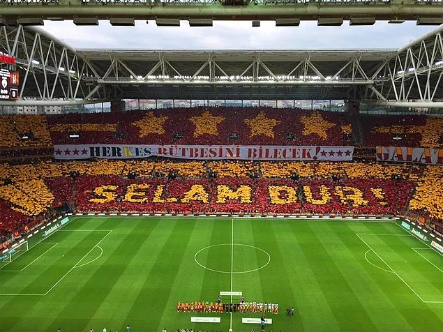

1905 yılında Ali Sami Yen ve arkadaşları tarafından, öğrenci oldukları Galatasaray Lisesi'nde kurulmuştur.
Kulüp, futbol branşında şu ana kadar 17 kez Türkiye Ligi şampiyonu olmuş; 2000 yılında da UEFA Kupası ve
UEFA Süper Kupası'nı kazanmıştır. Galatasaray ayrıca Uluslararası Futbol Tarihi ve İstatistikleri
Federasyonu (IFFHS-International Federation of Football History & Statistics) tarafından yapılan
"Dünyanın en iyi futbol kulüpleri" istatistik çalışmasında, 2000 Ağustos ayı en iyi takımı 2001 Ocak
ayında ise puan sıralamasında 1. sıraya yükselerek ayın lideri olmuş ve dünyadaki seçkin futbol
kulüpleri arasındaki yerini almıştır.
Galatasaray UEFA Kupası'nı yenilmeden ve Şampiyonlar Ligi gruplarını 3. olarak bitirip kazanan tek
takımdır. 1999-2000 yılında, UEFA Kupası finalinde İngiltere'nin Arsenal kulübünü penaltılarla yenerek,
bir Avrupa Kupası kazanan ilk ve tek Türk futbol kulübü olmuştur. Galatasaray aynı yıl; Super Kupa'yı da
Real Madrid'i 2-1 yenerek kazanmıştır. Avrupa'da en fazla başarı yakalamış Türk takımı olan
Galatasaray'ın Avrupalı rakiplerine oranla mütevazı olarak görülen kadrosuyla kazandığı UEFA Kupası ve
Süper Kupa dünyada büyük bir başarı olarak görülmüş, böylece Galatasaray adı tüm dünya tarafından
tanınan bir marka haline gelmiş ve kulüp dünya çapında büyük bir taraftar topluluğu kazanmıştır.
| BAŞARILARI |
|---|
| Türkiye'nin ilk futbol kulübüdür. (1905) |
| Dünya sıralamasında 1. sıraya yükselen ilk Türk takımı. |
| Bir sezonda en çok gol atan takım unvanı Galatasaray'da. |
| Ligde rakiplerine en fazla puan farkı atarak şampiyon olan takım. |
| Şampiyon Kulüpler Kupası'na katılan ilk Türk takımıdır. (1956-57) |
| Şampiyon Kulüpler Kupası'nda yarı final oynayan ilk Türk takımı. (1988-89) |
| Şampiyonlar Ligi'ne katılan ilk Türk takımı. (1993-94) |
| Şampiyonlar Ligi'ne en çok katılan Türk takımı. (14 kez) |
| Avrupa'da kupa kazanan ilk Türk takımı. (17 Mayıs 2000, UEFA Kupası / ilk ve tek) |
UEFA Kupası'nı yenilgi yüzü görmeden kazanan ilk takım. (1999-00)
|
| Şampiyonlar Ligi'nde çeyrek final oynayan ilk Türk takımı. (3 kez) |
| 4. yıldızı kazanan ilk ve tek Türk takımı. (2015)  |